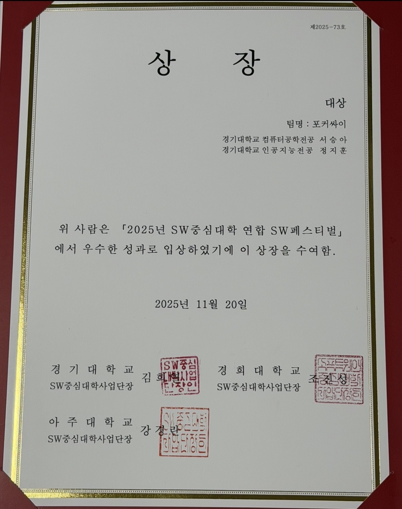
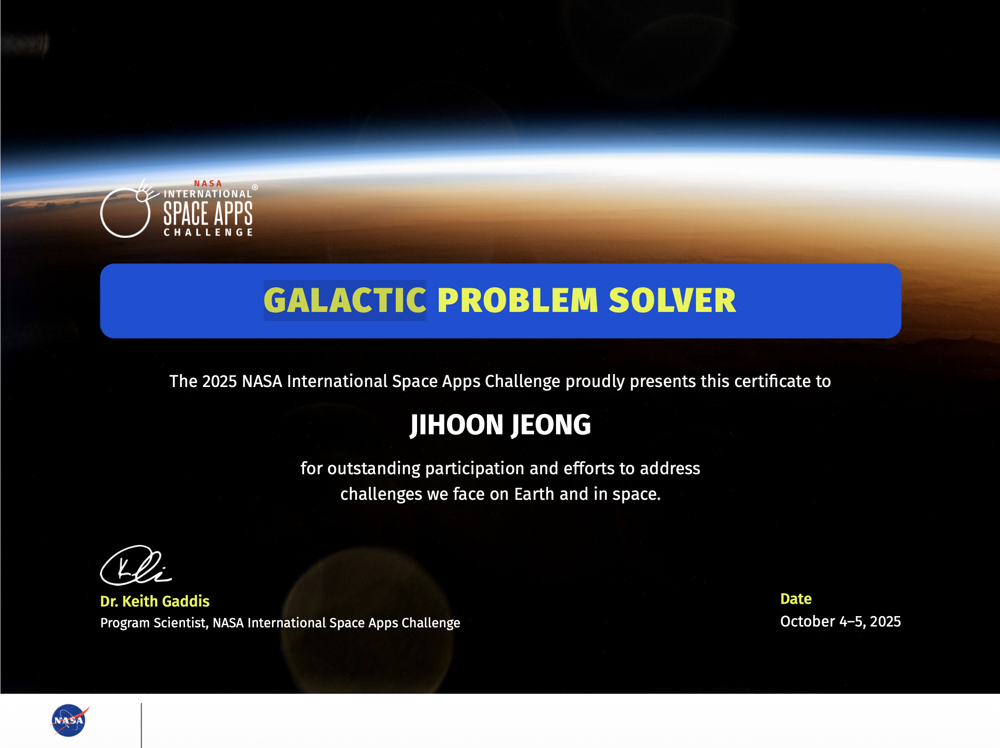
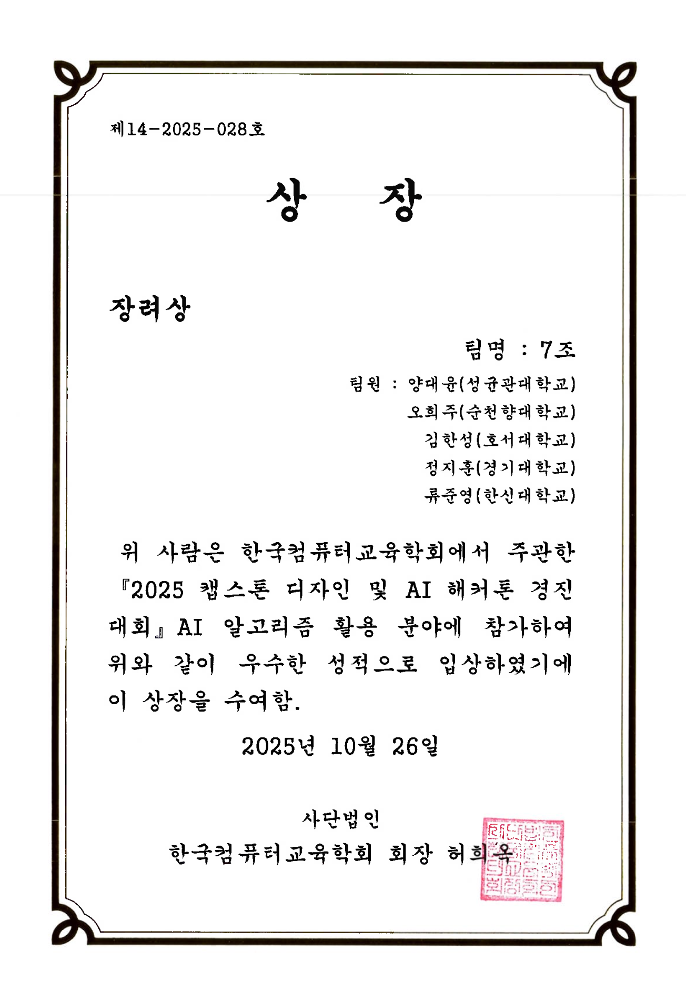
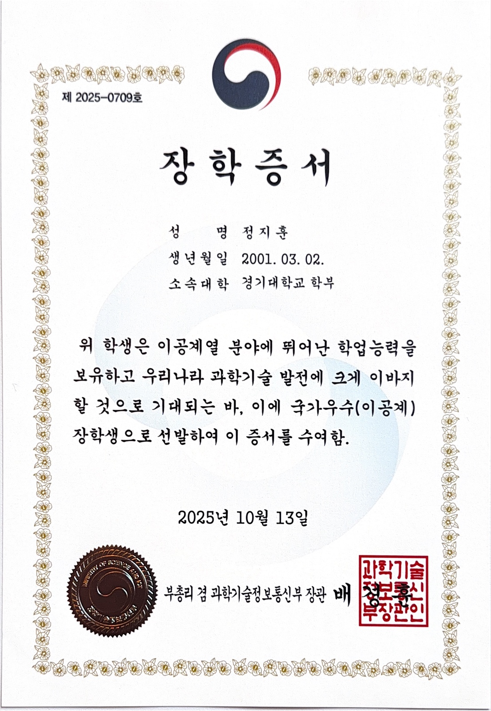
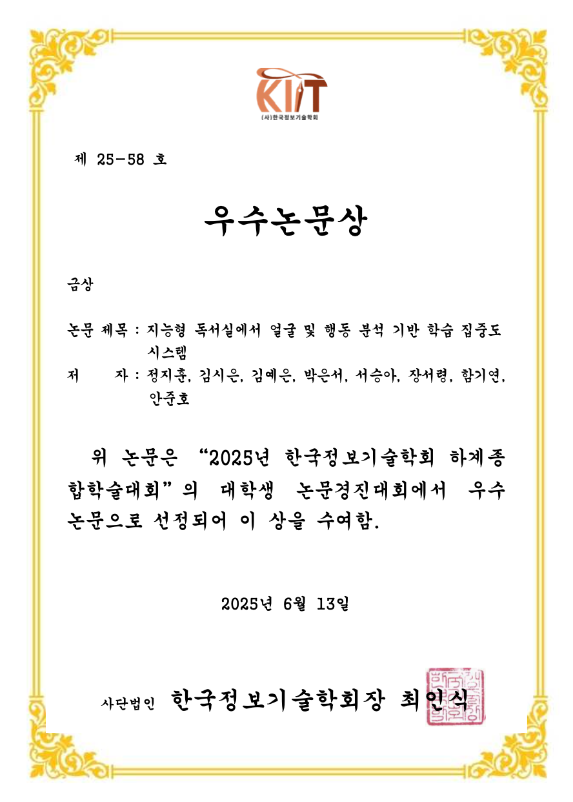
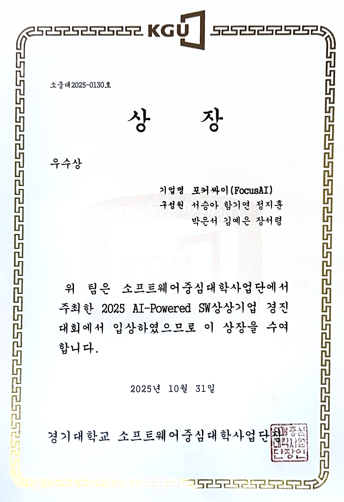
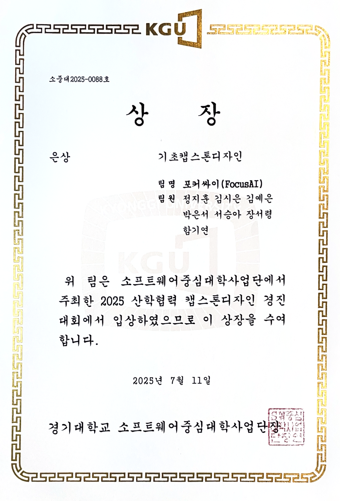

Awards
Academic awards, competitions, and scholarships.
[University] 2026 AI-Powered SW Startup Idea Competition — Top Excellence Award (I SEE YOU)
I SEE YOU: a multimodal AI platform for verifying content trustworthiness. I presented as team lead.
Top Excellence Award[University] 2026 Industry-Academia Capstone Design Competition — Top Excellence Award (I SEE YOU)
The multimodal content-verification system behind I SEE YOU, also published at KIIT 2026 (Best Paper, Silver).
Top Excellence Award2026 KHUTHON Excellence Award (TrendDo)
TrendDo: from trends you watch to culture you live — an AI culture-circulation platform.
4-person team project (Sieun Kim · Jeongah Yoon · Jihoon Jeong · Sumin Han)
The certificate is pending delivery; the image will be added once received.
2025 SW-Oriented University Alliance SW FESTIVAL — Grand Prize

2025 NASA International Space Apps Challenge — GALACTIC PROBLEM SOLVER

2025 Capstone Design & AI Hackathon Competition — Encouragement Award

National Science & Engineering Scholarship
Full tuition scholarship for junior and senior years

2025 KIIT Summer Conference — Best Paper Award (Gold)

[University] 2025 AI-Powered SW Startup Idea Competition — Excellence Award

[University] 2025 Industry-Academia Capstone Design Competition — Silver Prize
